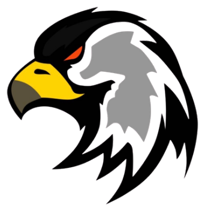
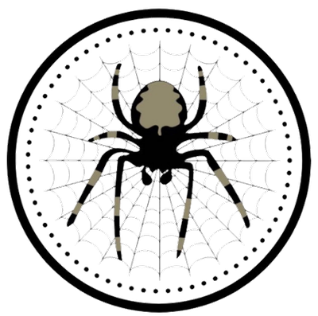
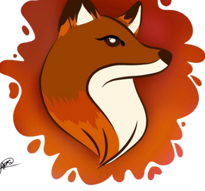
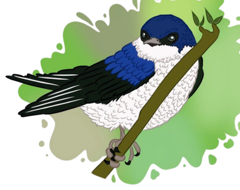

Cinco unidades, uma família
Nossas Unidades
Conheça as unidades que fazem parte do Raízes do Sertão.

Tarântula

Raposa

Andorinha
Beija-Flor
Uma das cinco unidades do nosso clube.
Emblema em atualização